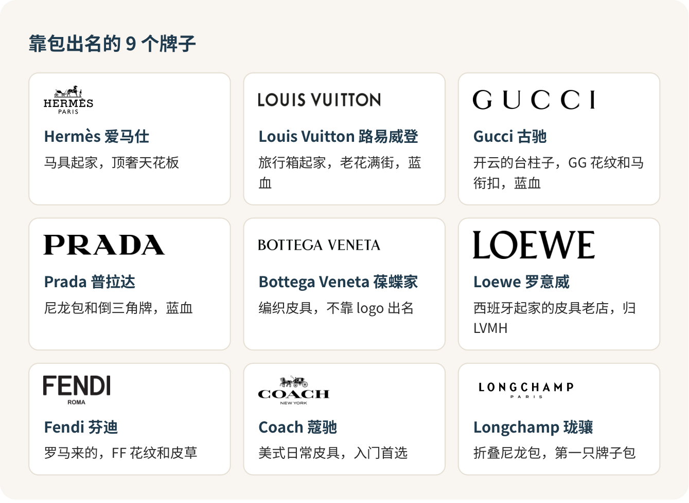
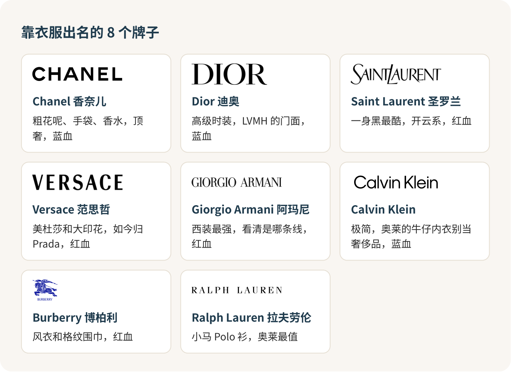

认识奢侈品牌：先认招牌，再谈派系
认奢侈品牌，别去背品牌史。先做到看见招牌能说出它卖什么，再弄清眼前这块招牌挂的是哪条线。派系、集团、红血蓝血，是认熟以后拿来聊天的谈资。顺序一反，你就会被名词绕晕，还会在奥莱买错东西。
第一次逛奥莱，晕是正常的
第一次去奥莱的人，十个有八个会在第一排店前面晕掉：一溜黑底白字，字母挤在一起，有的认得一半，有的念都不会念。朋友在旁边说“这是开云系”“那个算轻奢”，你跟着点头，其实一个都没对上。
没关系。这跟大一开学认食堂窗口一样，先记住每个窗口卖什么，吃过两回就熟了。
先把十七块招牌认熟
我把常见的十七个牌子分成两拨：靠包出名的，和靠衣服出名的。分法只为好记，香奈儿、迪奥的包一样出名，古驰、普拉达也做衣服。每张卡只记一句话。


老花、格纹、编织、金属三角牌，这些长在商品上的图案各有各的主人，但满身老花不等于是真货，满身编织也未必是葆蝶家。认牌认招牌，别认图案。
我的分层：四档就够用
给这些牌子排个大致位置，我分四档。
顶奢：爱马仕、香奈儿。天花板。别家常见的包一两万，它们的包从三万往上走，最出名的那几款连官网都不卖。对大学生来说，它们是用来认识的，不是用来买的。
奢侈主线：路易威登、迪奥、古驰、普拉达、圣罗兰、芬迪、罗意威、葆蝶家、博柏利、范思哲。大家嘴里的“大牌”就是这一档，一只常见款的包一万五上下。
设计师成衣：Polo Ralph Lauren、Max Mara、Theory、Sandro、Maje 这些。主要卖衣服，衣服做得好，包不是它们的强项，买它们就买衣服。
入门轻奢：蔻驰、Michael Kors、Kate Spade，还有珑骧的折叠包。一千出头就能拿下。第一只“牌子包”从这里开始，我觉得刚刚好。
档和档之间不是一堵墙。古驰一只超小手袋可以比路易威登的常规款还便宜；同一个牌子的口红和手袋，根本不在一个世界。拿专柜口红的价去判断一个牌子的包贵不贵，是最常见的误会。
派系，说白了就是谁家的
朋友嘴里的“派系”，多半在说集团，也就是背后是谁在经营。记住三家大户就够了。
LVMH，最大的那一家，路易威登、迪奥、芬迪、罗意威都是它的。大家爱叫它“法系大户”，可罗意威其实是西班牙起家的。
开云，古驰、圣罗兰、葆蝶家、巴黎世家都在这里，四家里最会玩潮流的一家。
Prada 集团，普拉达、缪缪，现在范思哲也归了它。网上很多老图还把范思哲画在别家名下，那张图过期了。
另外两个美国来的：蔻驰背后是 Tapestry，Calvin Klein 背后是 PVH。
同一个集团的牌子，档次和风格可以差得很远，就像一家公司承包了食堂好几个窗口，盖饭和麻辣烫不会因为同一个老板就变成一个味儿。知道集团是为了听懂别人聊天，拿它判断哪个包更好，用错了地方。
红血蓝血：听得懂就行
“蓝血”“红血”是时尚圈和网友传出来的叫法，没有哪个机构发过正式名单，但聊天时人人都在用。常见的说法是：
六大蓝血：香奈儿、迪奥、路易威登、古驰、普拉达、Calvin Klein（指它的秀场高端线，跟奥莱里的牛仔内衣没关系）。
八大红血：爱马仕、阿玛尼、博柏利、范思哲、华伦天奴、圣罗兰、纪梵希、浪凡。
你会发现爱马仕在红血、CK 在蓝血，可见这份名单跟价格、质量都不挂钩，“蓝”也不是 logo 的颜色。我的态度很明确：知道它，是为了别人说起时你接得住；拿它决定买什么，就是被带了节奏。
同一个牌子，先分清是哪条线
这是在奥莱最容易栽的地方。
阿玛尼至少三条线：Giorgio Armani 是高端正装，Emporio Armani 是鹰标的年轻线，EA7 偏运动。拉夫劳伦也一样，Polo Ralph Lauren 是大家熟的那只小马，Purple Label 是贵得多的高端线。CK 的牛仔和内衣在奥莱最常见，跟秀场上的 Calvin Klein Collection 是两回事，当基础款买很好，当奢侈品买就亏了。
看招牌全称，比看 logo 重要。招牌上带 OUTLET 的，就是奥莱专门的门店。
去奥莱，别指望四大天王
爱马仕、香奈儿、路易威登、迪奥，这四家不开奥莱店，北京、天津、上海几家大奥莱里都找不到它们。奥莱里谁跟你说有这几家的“内部货”“尾单”，掉头就走。
奥莱里我觉得最值的，是拉夫劳伦的 Polo 衫和衬衫、博柏利的围巾、珑骧的折叠包、蔻驰的小皮具：款式经典，不怕过季，打完折确实划算。最容易买亏的，是满身大 logo 的“爆款”，奥莱里这类多半是过季的，或者专门给奥莱做的款。
进店做三件事：看清招牌全称；拍下吊牌上的款号，回品牌官网搜一下，搜得到同款才谈便宜了多少；付钱前问一句：
这件是正价店同款，还是奥莱专门的款？几天内能退换？
门口写的“低至两折”，说的是最低那一档，你手里那件多半不是。
出发前一晚，把那家奥莱官网的品牌目录翻一遍，在认得的牌子上画个圈。到了先去圈里的店，看完再随便逛，钱包和腿都轻松。